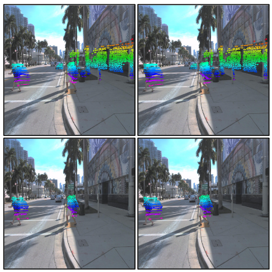
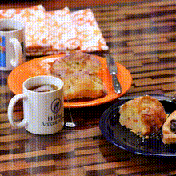

Hyunju Ryu
I am a first-year Ph.D. student in Artificial Intelligence at Korea University (Computer Vision Lab, advised by Sangpil Kim), focusing on multimodal generative models. I am broadly interested in developing simple yet effective approaches to complex generative AI problems, and I'd love to connect if you'd like to collaborate or chat!
Email / CV / GitHub / Google Scholar / LinkedIn
02/2026 - One paper got accepted at CVPR 2026!

Motion Cues from Image-based Point Tracking for LiDAR Scene Flow Estimation

WaTeRFlow: Watermark Temporal Robustness via Flow Consistency
Last updated: May 15, 2026
Website template adapted from Jon Barron.